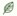

岡山県浅口市鴨方町六条院西2320番地
0865-44-6655
●大麦若葉とは…イネ科の一年草で、ミネラル含有率が非常に高い優れた植物です。
●本品は、大麦若葉を独自の製法で飲み易く加工しました。
●緑色野菜の不足がちな方の健康維持にお役立て下さい。
●無添加
●無着色
●食物繊維46%
お召し上がり方
水や牛乳(約150cc)に1包(2.5g)を入れ、スプーン等でよくかき混ぜてお召し上がりください。
アップルジュース・パインジュースなどの酸味のあるジュースと混ぜても美味しく召し上がれます。
1日に1～2包を目安にお召し上がりください。
※本品1日量(1～2包)のご使用で緑黄色野菜の1日の目標摂取量を補えるわけではありません。
商品名:大麦若葉30包入
商品コード:A-1
価格(税込):1箱/990円
商品のご注文・お問い合わせはこちらから
商品名:大麦若葉60包セット(シェーカー付)
商品コード:S-1
価格(税込):1セット/1,960円
商品のご注文・お問い合わせはこちらから
商品名:大麦若葉90包セット
商品コード:A-3
価格(税込):1セット/2,520円
商品のご注文・お問い合わせはこちらから
◆送料(お客様負担)全国一律…500円(税込)
(北海道・沖縄及び離島は、送料1,000円(税込)とさせていただいております)
◆お支払い方法…代金引換(手数料無料)
◆1万円以上のお買上げで送料無料
脱酸素剤・カイロ
環境整備関連機器
大麦若葉
会社概要
トップ
※商品の品質等につきましては、万全を期しておりますが、商品に不都合などございましたら、送料は当社で交換・返品をお受け致します。